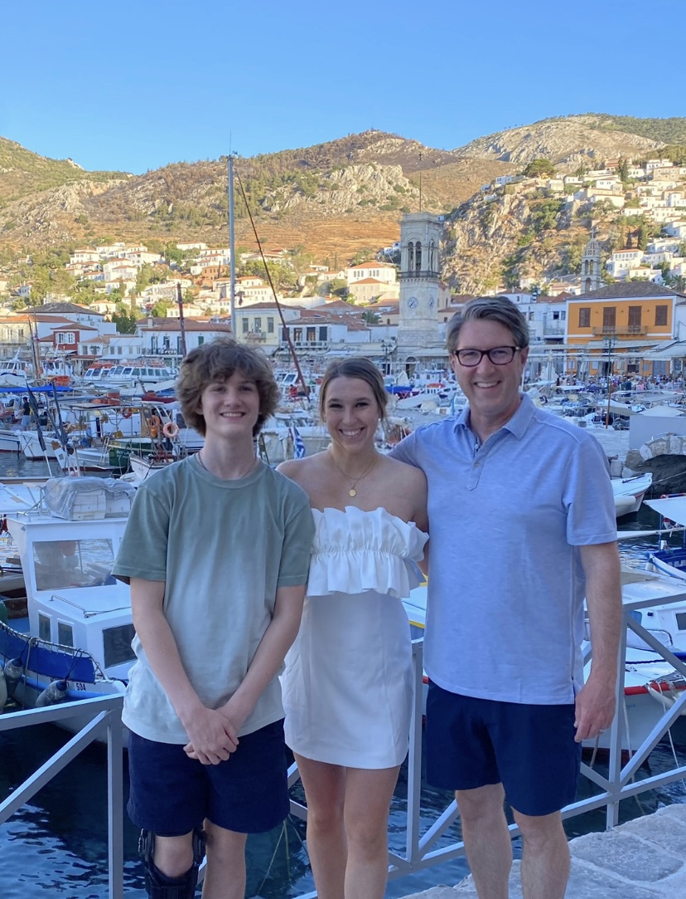
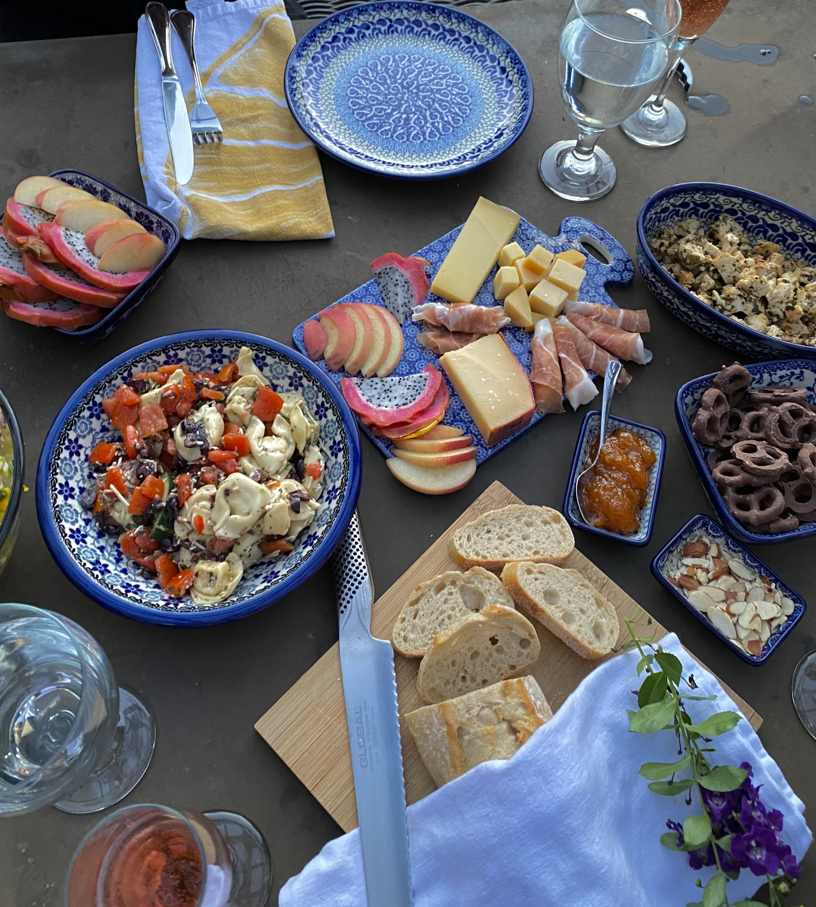
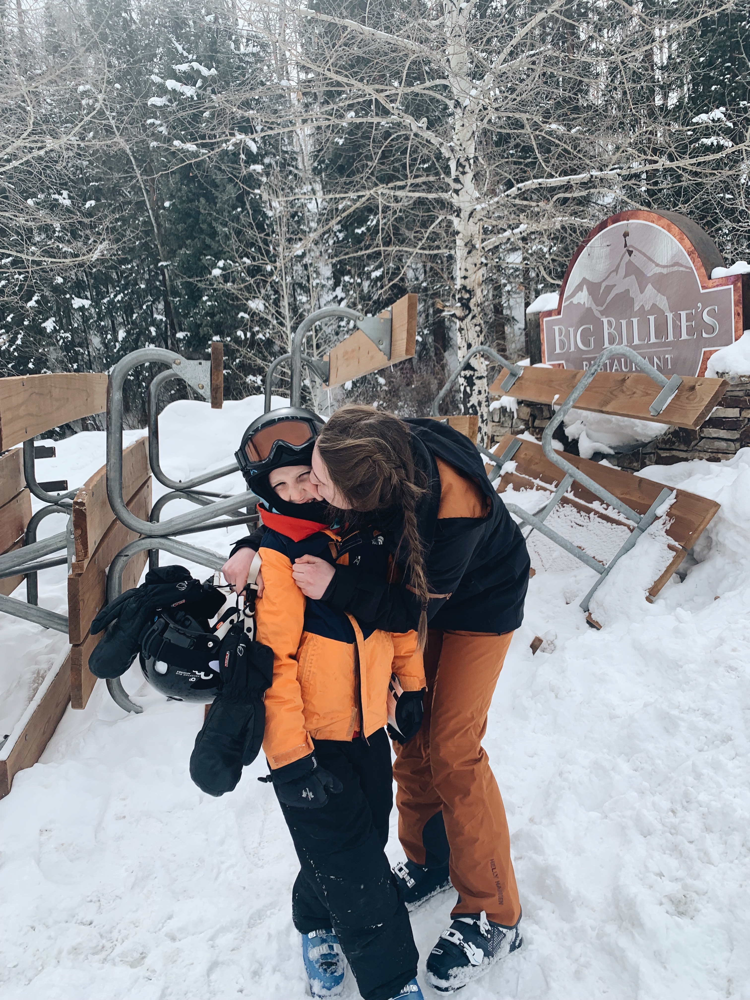
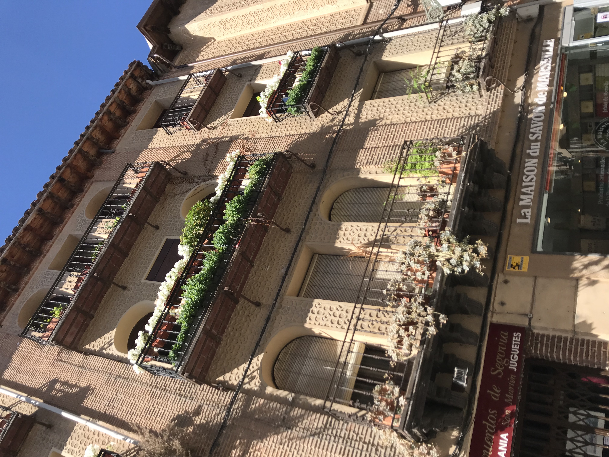
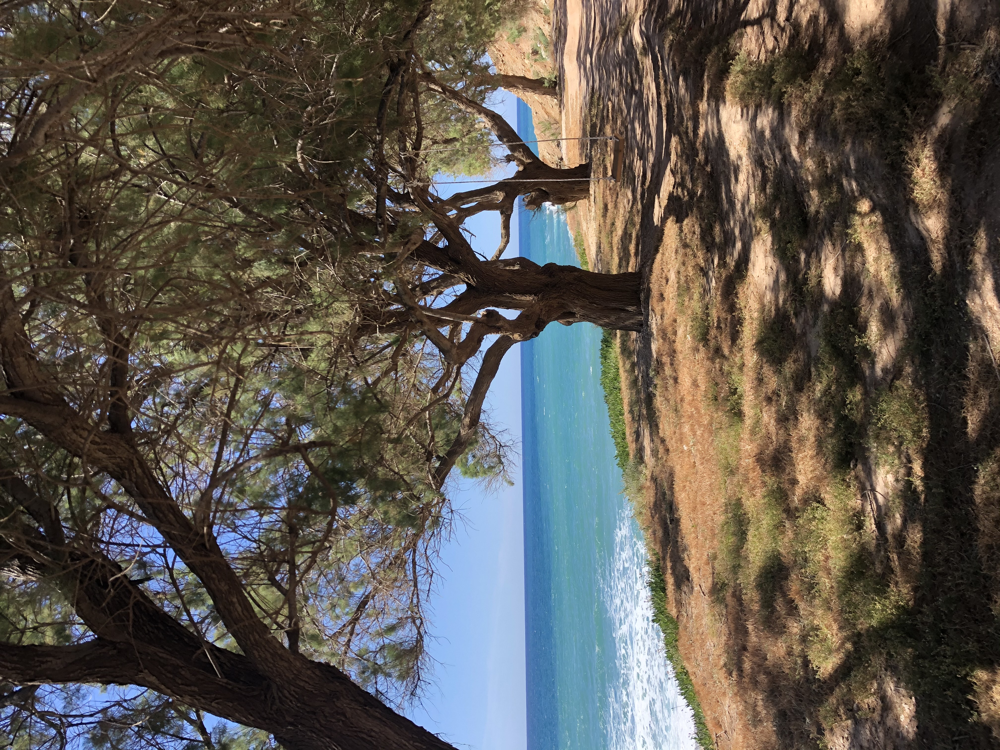
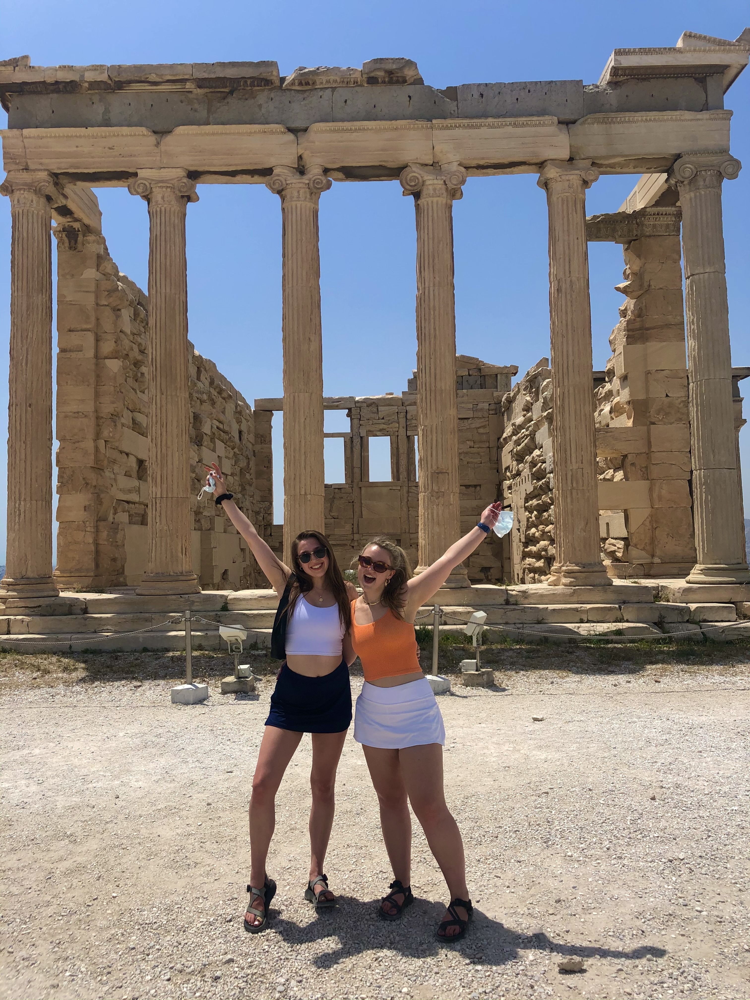
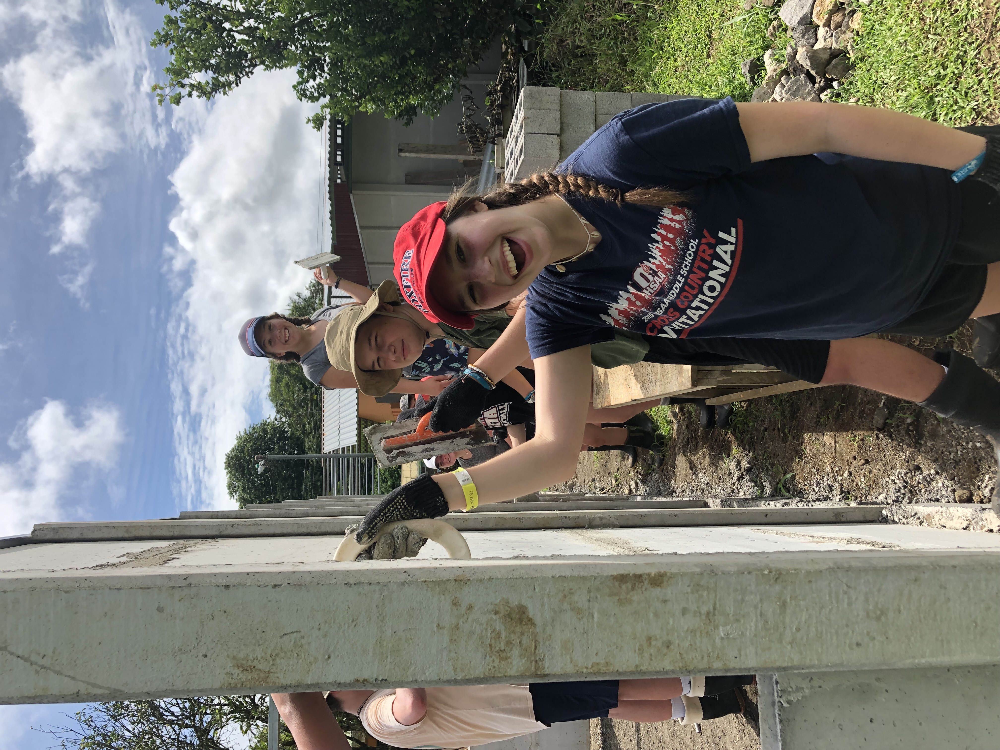
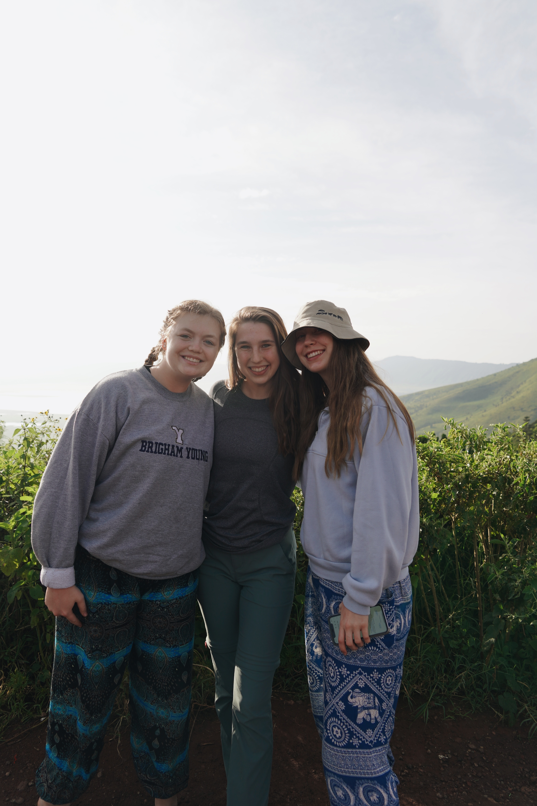
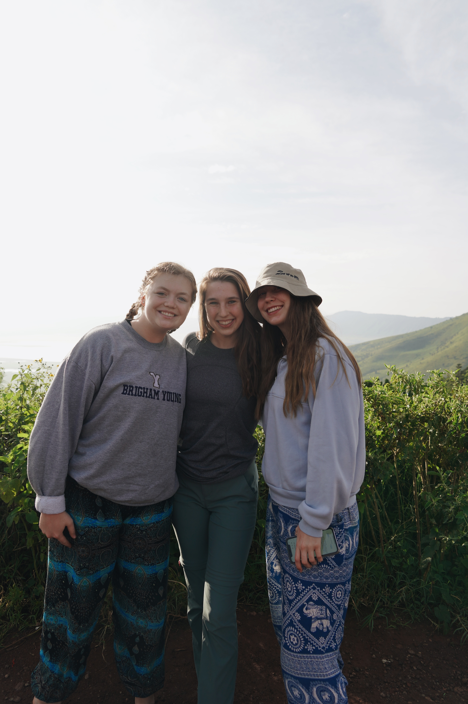
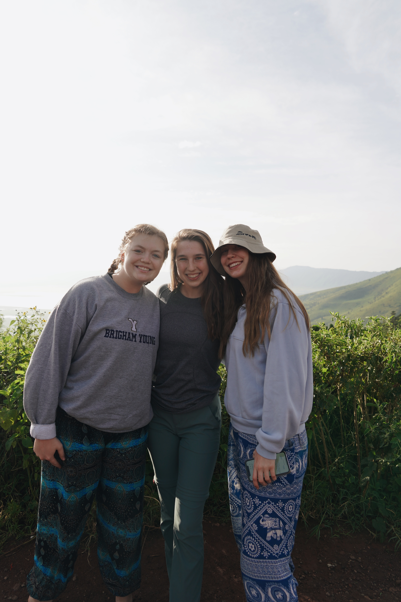

In my free time I love spending time cooking, hosting dinner parties, being outdoors, and being with my family! If I can fit all three in, then I am
extra happy! I love to travel. Growing up, I moved over 4 times between different locations in the Netherlands including Wassenaar, Den Haag and Amsterdam as well
in the United States in Ohio. My family moved around due to my fathers job, and for that reason, I have visited over 27 countries since the time I was born!
Below are some pictures from a building in Spain, a beach off the coast of Crete and the Parthenon in Athens.








High School Introduction Video
This was my introduction video I edited and put together when applying to colleges.
I have a passion for film so this was really fun for me to create.

 
